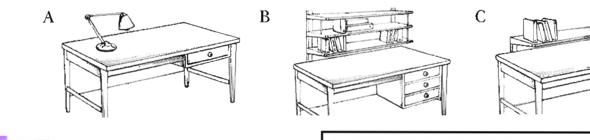

Pre-listening: a room to rent
You are going to hear Alan and Sara talking about advertising a spare bedroom to rent.
Before you listen, look at the types of furniture below. Tick the furniture you think might be in the room. (Free activity — answers will vary.)
Listen and answer the questions — Track 10
Track 10 — Alan and Sara's conversation
Context listening — advertising a bedroom to rent
Listen and answer the questions below.
1 Which three pieces of furniture are in the room?
2 What does the desk look like?

Listen again and fill in the gaps — Track 10
Listen again and fill in the gaps in the advertisement. Write no more than one word or a number for each answer.
Good location close to two types of .
Rent per .
Rent includes and all other bills.
Look at the two groups of nouns
Look at the two groups of nouns in the table below. How are they different? Add the nouns from Exercises 2 and 3 into the table in the correct group.
| Group 1 | Group 2 |
|---|---|
| advertisement, newspaper, windows | money, news, accommodation |
B1 — Countable and Uncountable Nouns
- generally have a singular and plural form:
a window, lots of windows - Some countable nouns only have a plural form: clothes, trousers, jeans, scissors
- take a singular or plural verb form:
The window is big. The windows are big. - can be replaced by a singular or plural pronoun:
I'd like that desk; it's better than mine. It's got shelves as well. They're really handy. - can be measured with weights and measures: two kilos of potatoes or numbers: It's got three drawers.
- can be used with a/an: a desk, an apple
- cannot be plural: advice (not
advices), furniture (notfurnitures), data - Some uncountable nouns look plural but they are not: news, economics, physics
- take only a singular verb form:
The natural light is really nice. - can be replaced by a singular pronoun:
'What shall we say about the furniture?' 'Well, it's not luxurious but it is very comfortable.' - can be measured with weights and measures: two kilos of sugar or with words like a piece of, cup of, bit of, slice of: a piece of information
- cannot be used with a/an: information (not
an information)
B2 — Some and any
We use some:
- In positive statements: There are some shelves above the desk.
- In questions, particularly in requests and offers: Would you like some biscuits?
- To mean 'an unspecified (not large) amount': It would be great to get some money to help with the rent. (we don't know how much money)
- With other determiners (e.g. my, the, these) to refer to a particular group: Some of my students have part-time jobs.
We use any:
- In negatives and questions: My desk hasn't got any drawers. Has your desk got any drawers?
- In positive statements to mean 'it doesn't matter who/which/where/when': Call me any time if you need further help.
B3 — Quantities
We can use the following words to say how many or how much:
| Quantity | Plural countable nouns | Uncountable nouns |
|---|---|---|
| everything | all (of) | |
| large quantities | lots of / plenty of / a lot of, many (of), most (of), a large/considerable/substantial number of | lots of / plenty of / a lot of, much (of), most (of), a large/considerable/substantial amount of |
| medium quantities | some (of) / a certain number of | some (of) / a certain amount of |
| small quantities | (a) few (of), a small/limited/tiny number of | (a) little (of), a small/limited/tiny amount of |
| nothing | no / not any / none of | |
Few and a little are different from few and little:
- Few rooms have such good natural light. (= not many, so you are lucky)
- We have a few rooms available with a sea view. (= a small number)
- Little research has been done in this area. (= not enough)
- A little research has already been carried out in this area. (= a small amount)
- We use a few of with other determiners (e.g. my, the, these) to refer to a particular group: A few of the rooms have a sea view.
- Lots of / a lot of are less formal than much/many: There are lots of advertisements for accommodation in the paper. Many scientists believe that global warming is having a negative impact on our climate.
- We do not usually use lots of with negative statements: We don't have a lot of/much time so we'll have to be quick. (not
we don't have lots of time) - We do not usually use much in positive sentences: I found a lot of information on the Internet. (not
much information)
Grammar extra: Nouns that can be both countable and uncountable
Sometimes the same noun can be either countable or uncountable depending on the meaning (e.g. light, room, cake, time). Materials and liquids can also be either (e.g. glass, paper, coffee, wine). Compare:
The natural light is really nice. (uncountable) vs Both of the lights in the ceiling are really old. (countable)
There isn't much room for a desk. (uncountable = space) vs We have two spare rooms. (countable = rooms in a house)
Do you drink much coffee? (uncountable = in general) vs I'd like to order a coffee, please. (countable = a cup of coffee)
Fill in the gaps with a word from the box
Fill in the gaps with a word from the box below in the correct form. If the word is countable, you may need to change it to a plural form.
Underline the correct form of the verbs
Underline the correct form of the verbs. Click the correct form for each numbered item.
Fill in the gaps with amount, number, few, little, many or much
Fill in the gaps with amount, number, few, little, many or much.
A large of people over 65 have frequent sleeping problems, such as insomnia, and deep sleep stages in elderly people often become very short or stop completely. Microsleeps, or very brief episodes of sleep in an otherwise awake cases, people are not aware that they are experiencing microsleeps. The widespread practice of burning the candle at both ends in western industrialized societies has created so sleep deprivation that what is really abnormal sleepiness is now almost the norm.
Decide if the underlined quantity expressions are correct
Read the extract from a talk about a holiday destination. Decide if the underlined quantity expressions are correct or not. Write ✓ if they are right, and write the correction if they are wrong.
Visit it 9 some time of the year and you will not be disappointed. Not 10 many places in the world can offer so much. 11 Not any holiday will ever match this one — our island has got it all!
Dressed to dazzle
Questions 1–6 — Match each company with the correct material
Write the correct letter A–H next to the companies 1–6. NB You may use any answer more than once.
Questions 7–14 — Complete the summary
Using plants
Nanotechnology will bring changes we can see, while the brand called will help the environment. Fibre made from the plant has better qualities than silk and wool.
Electronics
In first attempts to use electronics, companies started with a material made by a standard method and then they fixed to the material.
Luminex fabric
needs a to make it work.
has already been used to make stage .
is not suitable for everyday wear because it is too .
The first products that can change colour are likely to be .